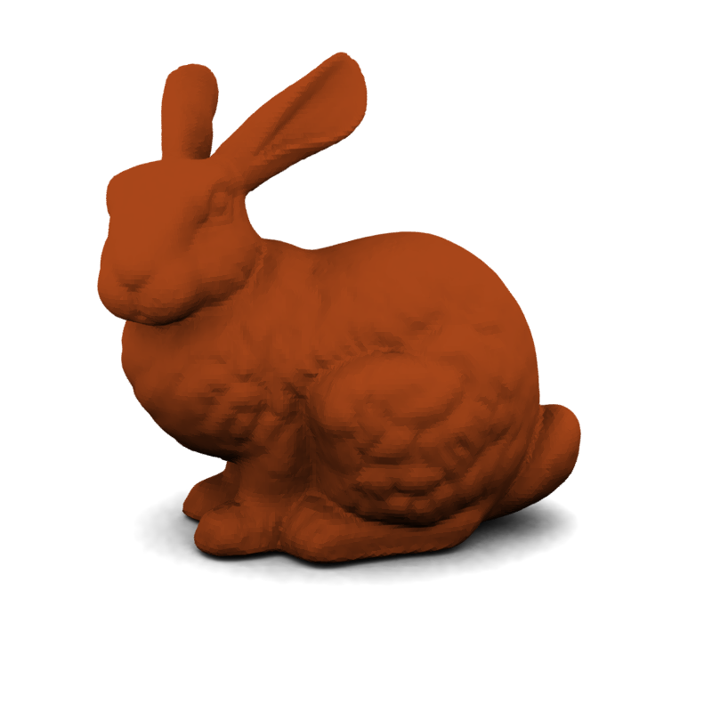

The Stanford bunny is a computer graphics 3D test
model developed by Greg Turk and Marc Levoy in 1994 at Stanford
University. The bunny consists of data describing 69,451
triangles determined by 3D scanning a ceramic figurine of a
rabbit. This model and others were scanned to test methods of
range scanning physical objects.